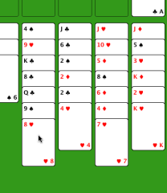

En este ejemplo vamos a mover el ocho de corazones hacia el nueve de picas. A la tercera columna se le hizo click, y el fondo está seleccionado.
 Ayuda de Freecell
Ayuda de Freecell
Haciendo una movida es fácil. Dale click a la posición de donde quieres mover y se seleccionará. Después dale click al destino y la movida será hecha (si está conforme a las reglas). Si te equivocas puedes descartar todas las movidas que quieras (usando el menú principal de editar).
En este ejemplo vamos a mover el ocho de corazones hacia el nueve de picas. A la tercera columna se le hizo click, y el fondo está seleccionado.

Ahora la segunda columna se le hace click, y la carta se mueve de lugar. También podríamos haber movido la carta hacia cualquiera de los cuatro free cells arriba si hubiéramos querido.